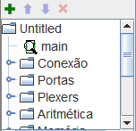

O painel Explorador (Explorer)
|  | The navigation panel has two functions. It can present the circuits being simulated in the view simulation or as here the circuits in the top and the lower the libraries represented by folders. These libraries include tools you can use in your projects. |
O Logisim organiza ferramentas em bibliotecas. Elas são exibidas como pastas no painel Explorador. Para acessar os componentes de uma biblioteca, você só terá que dar um duplo clique na pasta correspondente. Abaixo, a biblioteca Portas (Gates) foi aberta e selecionada a ferramenta NAND. Você poderá ver que o Logisim agora estará pronto para adicionar portas NAND ao circuito.
Se você consultar as opções na biblioteca Gates, você notará que não há necessidade em desenvolver um circuito XOR: ele já existe no Logisim.
Quando você criar um projeto, ele automaticamente incluirá várias bibliotecas:
- Conexão (Wiring): Componentes que interagem diretamente com os fios.
- Portas (Gates): Componentes que executam funções lógicas simples.
- Plexers: Combinações mais complexas de componentes, como multiplexadores e decodificadores.
- Aritmética: componentes que executam operações aritméticas.
- Memória: Componentes que guardam dados, como flip-flops, registradores e RAM.
- Entrada/Saída: Componentes que têm a finalidade de interagir com o usuário.
- Base: As ferramentas que são essenciais para se usar o Logisim embora seja muito provável que você não irá trabalhar com ela frequentemente.
- TCL:
- HDL-IP:
- BFH mega function:
O Logisim permite adicionar mais bibliotecas, usando o menu | Projeto |→| Carregar Biblioteca |. Você poderá ver que o Logisim tem três categorias de bibliotecas:
- Bibliotecas predefinidas são aquelas distribuídas com Logisim. Elas estão documentadas em Referências para Bibliotecas.
- Bibliotecas do Logisim são projetos construídos dentro Logisim e salvos em disco. Você poderá desenvolver um conjunto de circuitos como um único projeto (como descrito em subcircuitos deste guia) e usá-lo como uma biblioteca para outros projetos.
-
Bibliotecas JAR são bibliotecas desenvolvidas em Java, mas não distribuídas com o Logisim. Você poderá baixar as bibliotecas JAR feitas por outros, ou poderá até mesmo escrever a sua própria como descrito na seção Bibliotecas JAR deste guia. Desenvolver uma biblioteca JAR é muito mais difícil do que desenvolvimento de uma biblioteca Logisim, mas os componentes poderão ser muito interessantes, incluir coisas como atributos e interação com o usuário. As bibliotecas predefinidas (exceto "Base") foram escritas usando a mesma API que as bibliotecas JAR podem usar, e demonstram apropriadamente a gama de funcionalidades que as bibliotecas JAR poderão oferecer.
Algumas bibliotecas JAR são distribuídas sem qualquer informação sobre qual a classe Java deverão iniciar. Ao carregar tal tipo, o Logisim solicitará que você digite um nome da classe. Esse nome de classe deverá ser previsto por quem distribuir o arquivo JAR.
Para remover uma biblioteca usando o menu | Projeto |→| Descarregar Biblioteca ... |. O Logisim irá impedi-lo de descarregar bibliotecas que contenham componentes utilizados em um circuito, que apareçam na barra de ferramentas, ou que estejam mapeados para um botão do mouse.
Aliás, uma biblioteca tecnicamente contém ferramentas, não componentes. Assim, na biblioteca Base poderão ser encontrados a ferramenta "Testar" (Poke) ( ), a ferramenta "Editar" (
), a ferramenta "Editar" ( ), e outras ferramentas que não correspondam diretamente a componentes individuais. A maioria das bibliotecas, no entanto, contém apenas ferramentas para adicionar componentes individuais, todas as outras bibliotecas são assim, exceto a "Base".
), e outras ferramentas que não correspondam diretamente a componentes individuais. A maioria das bibliotecas, no entanto, contém apenas ferramentas para adicionar componentes individuais, todas as outras bibliotecas são assim, exceto a "Base".
Próximo: A tabela de atributos.